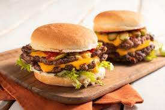

Home
Burger

Description
Burger is a popular sandwich consisting of a cooked meat patty (traditionally beef) placed inside a sliced bun or bread roll
It is warm, cheesy, healthy and kids fav.
Ingredients
- Bun
- Sauce
- Cheese
- Patty
- Ground beef/veggies
Steps
- Shape: Form ground meat or your veggie mix into round, flat patties.
- Season: Sprinkle both sides generously with salt and pepper.
- Cook: Grill or pan-fry the patties until they get a nice brown crust.
- Melt: Place a cheese slice on top during the last minute of cooking
- Toast: Slice your buns in half and toast them lightly in a pan.
- Build: Put sauce on the bun, add the patty, and top with veggies.